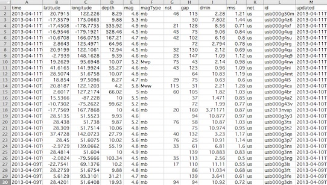

USGS Survey Data
The USGS collects and provides data about observed earthquakes around the world. Their data is available in many formats. We will use a straightforward one, CSV format, that can be read into spreadsheet programs like Microsoft Excel. Here is a sample file from USGS:

Each row in the file is an observation that includes the time it occurred, the latitude, longitude, depth, magnitude, and other attributes.
Let's add a mark to our map of the first earthquake observation in the file. It occurred at longitude, 122.226, and latitude, 20.7915. Let's round these to (122, 21) and have our turtle stamp that location.
Challenge:
Add in the next 3 observations (rows from the spreadsheet image). Note that they occurred very close together, so, the marks for these will overlap slightly.